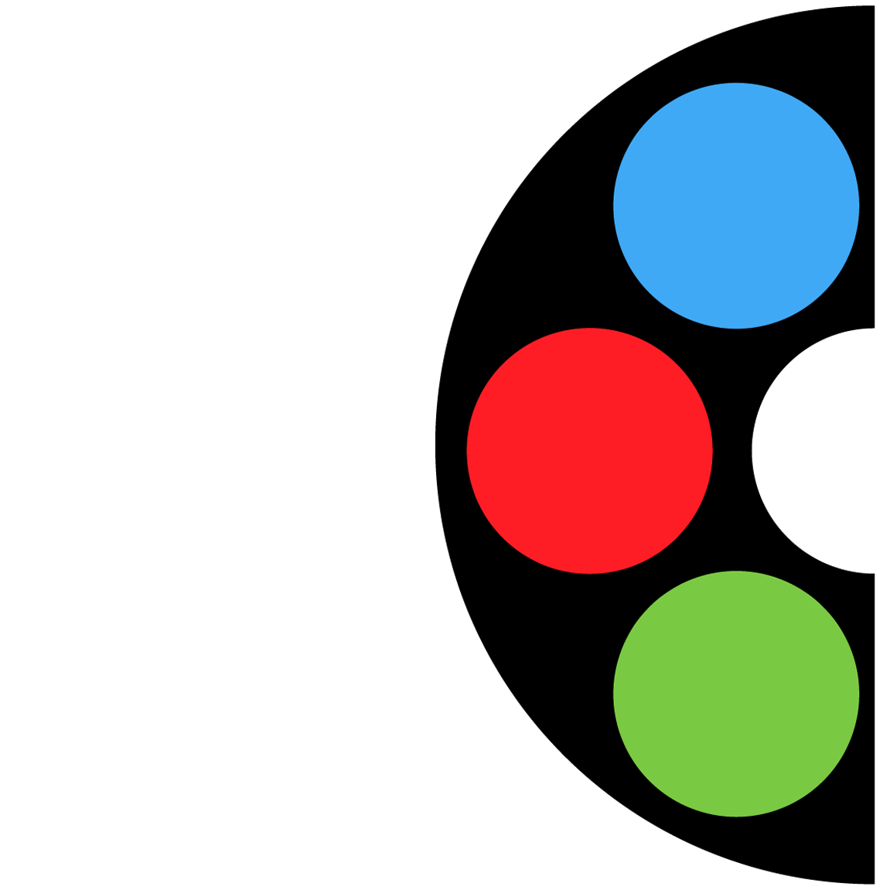

Welcome to foodyC.
Who We are?
Foody Couple is an online community dedicated to good food.
Our tagline says "in
quest of good food". We are a food blogger, food vlogger,
food taster, reviewer.
We love everything related to food. We currently run a
facebook page and
a facebook group that is dedicated to foods only. We visit
different
restaurants or street food corners and try out different foods in
different
category and we do share them with you all. How did it was started?
It was started with a basic initiation from Titas Mallick and
Sukanya Saha. They
are a real-life couple and they love to eat good food at all.
Sukaya loves to
take pictures of the food and loves to share them with the
world. Whereas Titas
was always been a content creator. Their thoughts were
merged. Foody Couple was
born. It was all started in September of 2017. It was
started as a very small
food community and it is still kept on growing.How do we operate?
We visit different restaurants and street food corners and
try it ourselves.
Restaurant owners also invite us to try out their food. As a
group foodyC
the community now also accepts an opinion from our viewers. In our
Facebook group all
the community members also share their quest for good food
with the world. We
are still growing.Any Plan?
Yup, We have a lot of
plans. Like growing outside this online community.
Arranging our food festivals
and as well as creating our food services
and other stuff like that. We have already launched our YouTube ChannelHow can you involve with Us?
It is simple just go through our online community.
All links to our different
social media accounts are given in the bottom section
of this page. Join with
us. We need your help to make this community grow
larger.Any technical pieces of information?
Yup, We do have a lot of
technical and legal statements written on our website
just find them on
different pages, read our group policies and join us.Relationship with CG?
Foody Couple is directly affiliated to Creativegun Films. Visit their
site to
know more who they are.Why Food?
Food doesn't have any
cultural or lingual barrier. Food is itself a religion.
That's why we love food.
The language of the food is its taste. We search for
that language. To
communicate globally and freely were no religion, no language
barriers nothing
else matters. So as a food fan this couple runs this community.
It is still
growing so bear with us.How to contact with foodyC/Foody Couple?
It is
very simple. All the links are provided on this page in the bottom
section. Just
Visit them. You can also find our Whatsapp number and email address them.
Contact us through them. We respond real quick.So lets summerise it. And don't forget to join us.
A real life couple Titas and Sukanya. In
quest for good foods. Review, recommendations and visiting new restaurants. Discovering budget foods.
Good food what everyone like. Titas and Sukanya in a journey for discovering budget good food in local
restaurants. Reviewing them and recommending to others as well.
Email:
foodycouple0@gmail.com
© Titas Mallick & Sukanya Saha
ALL PERSONAL INFORMATION PROVIDED IN THIS PAGE ARE COMPLETLY
SECURE.
a CREATIVEGUN project.
Check Us Out. Links Below
affiliated to
Thanks, amazing human | FC2020 | CG